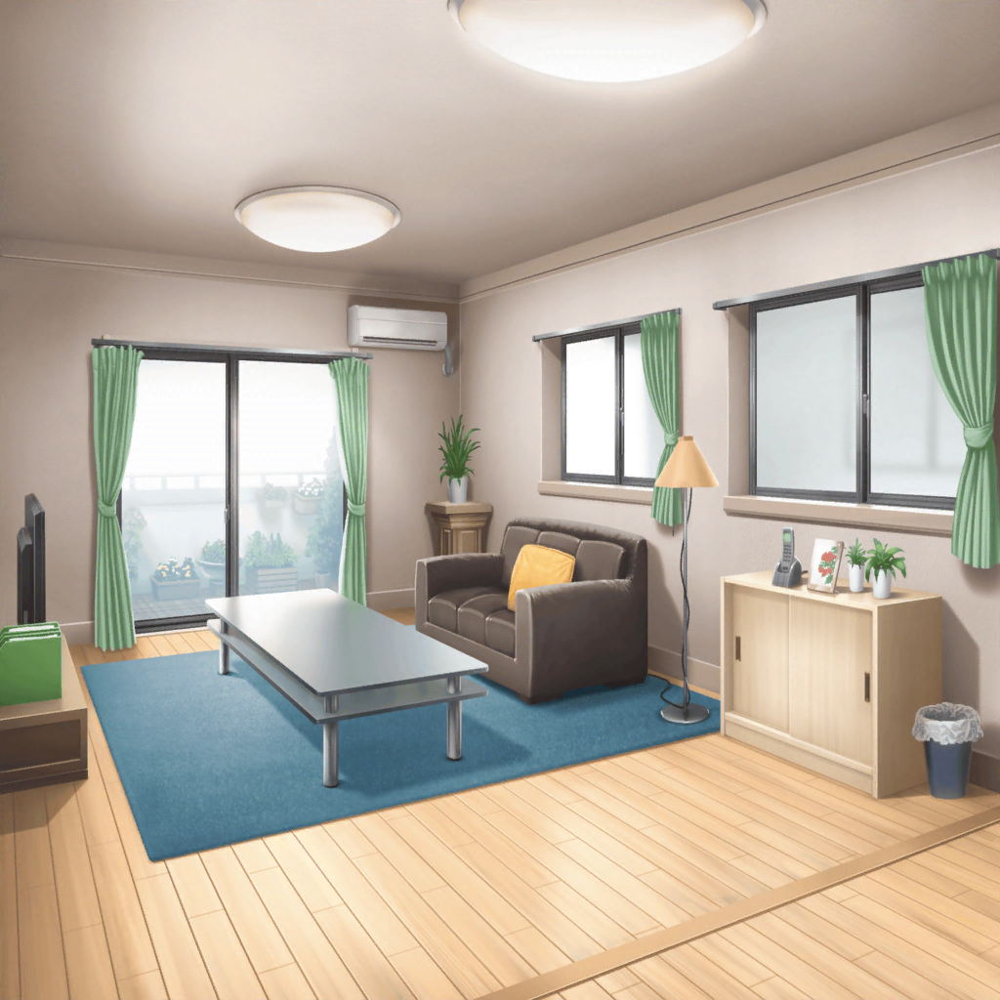
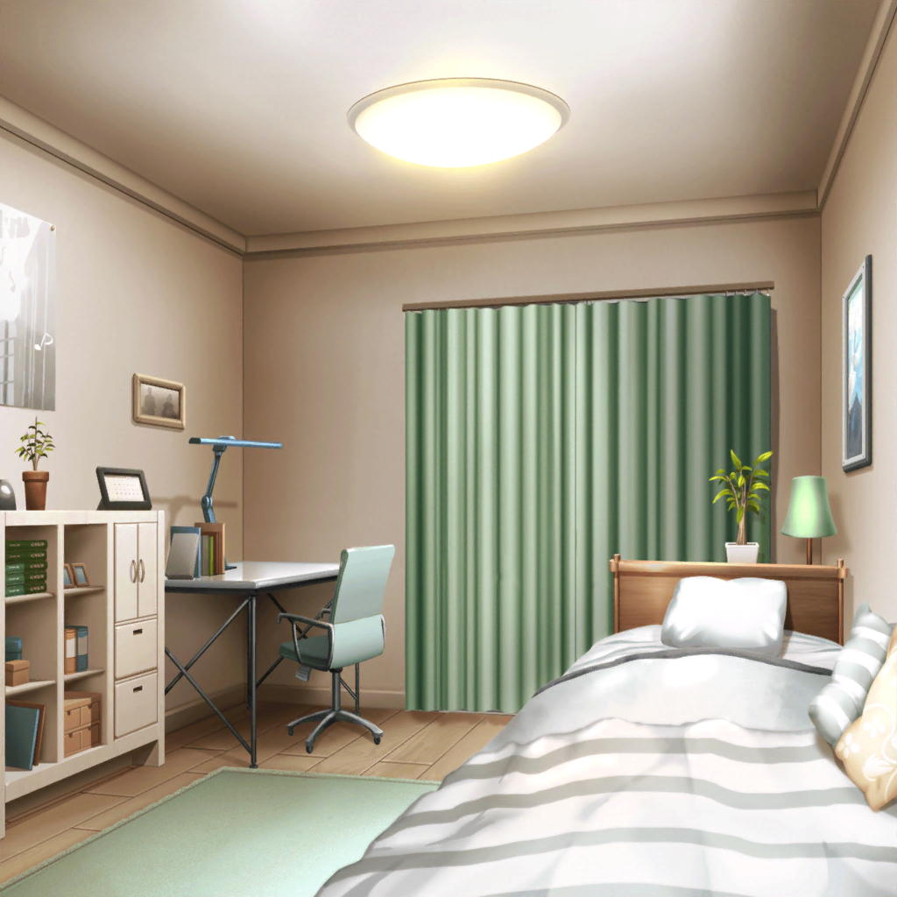

氷川家 リビング
紗夜
ただいま
紗夜
（……夕飯を食べたらギターの練習をしないと。
それから、生徒会の資料もまとめて……）
日菜
おねーちゃん、お帰り！
紗夜
日菜……ただいま
日菜
あのね……っ！
おねーちゃんに話があって、待ってたんだ！
紗夜
話？
日菜
あ、あのさ！
商店街の七夕祭り、一緒に行かない？
紗夜
（……っ！
今井さんが言っていた……）
日菜
週末にあるんだよ！
クラスでもその話題で持ち切りなんだー
日菜
もちろん、あたしもるるん！ って
楽しみにしてて！
紗夜
……そ、そう
日菜
そ、それで……その……
おねーちゃん、一緒に行かない？
紗夜
そういうお祭りってたくさん人がくるのよね？
日菜
えっと、それは……そうだけど……
日菜
で、でも！ な、なんかライトアップとかもあって、
商店街の人達がんばってるんだって！
きっとおねーちゃんも、るん！ ってなると思うよ～
紗夜
わ、私は、人混みが苦手だから……
日菜
えっ……で、でも……っ！
日菜
屋台もいっぱい出るって聞いたよ！
りんごあめとか、焼きそばとか、射的とか……
あと、えっと……
日菜
あ！
あと、パレードもあるって聞いたよ！
紗夜
パレード……？
日菜
うん！
子供達が織姫と彦星の仮装して歩くんだって！
日菜
きっとカワイイよね！
ピピッって感じがする！
あたし、見たいな～
紗夜
……悪いけど、私は遠慮しておくわ。
別の人を誘ったら？
日菜
おねーちゃん……？
紗夜
私よりも、今井さんや同じバンドの丸山さん達と
一緒に行ったほうがきっと、楽しいわよ
紗夜
さっきも言ったけど、私は人混みは苦手だし……
屋台の食べ物もあまり得意ではないから
日菜
……そっか。
おねーちゃん、ごめんね？ 無理に誘っちゃって……
紗夜
いいえ、いいのよ。
それじゃあ私は、部屋でやることがあるから
日菜
…………
日菜
あたしは、おねーちゃんと行きたいのになあ……
日菜
はあ……

紗夜の部屋
紗夜
……
紗夜
（日菜のあの顔……少し、悪いことをしたかしら）
週末
リビング
日菜
はあ……結局おねーちゃん、OKしてくれなかったなあ……
日菜
……最後にもう一回声、かけてみようかな？
 紗夜の部屋
紗夜の部屋
日菜
おねーちゃ……
紗夜
……
日菜
ギターの練習、してる……
邪魔したらダメ、だよね……
日菜
……仕方ない、かあ。
七夕祭り、１人で少し見てこようかな……